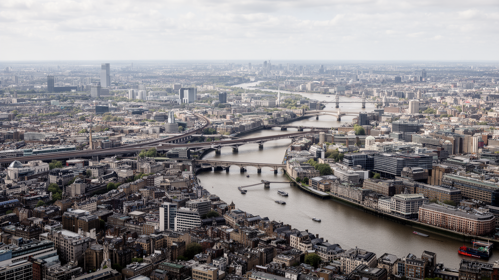
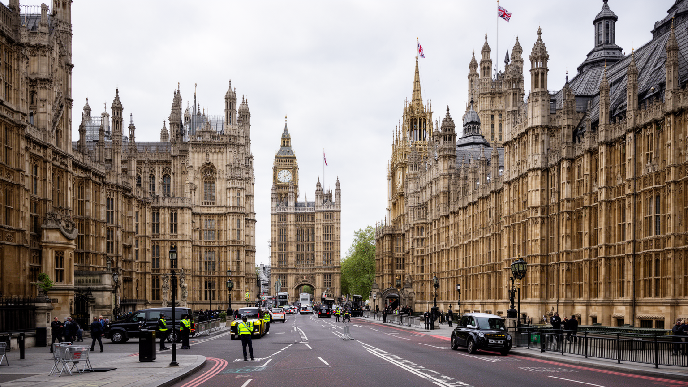
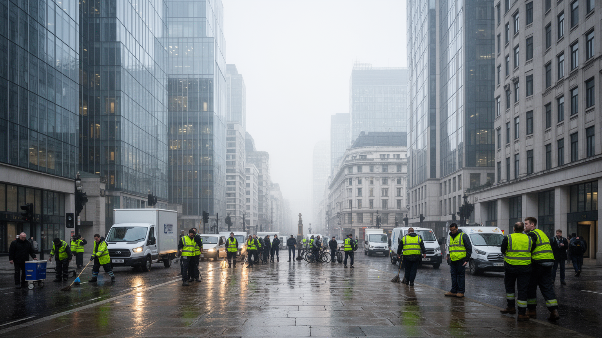
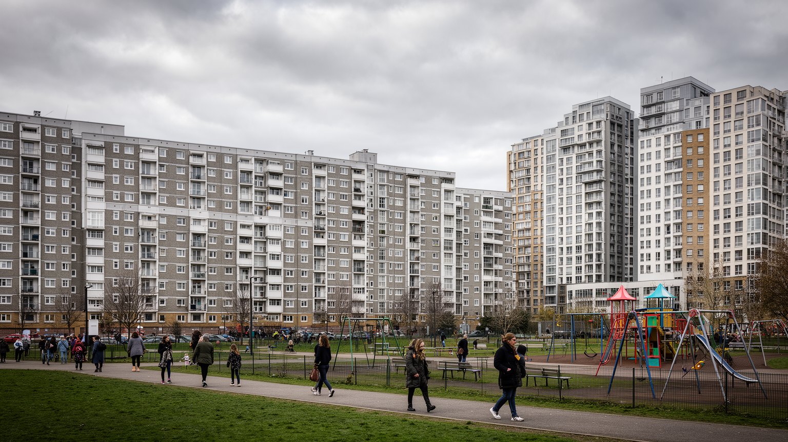
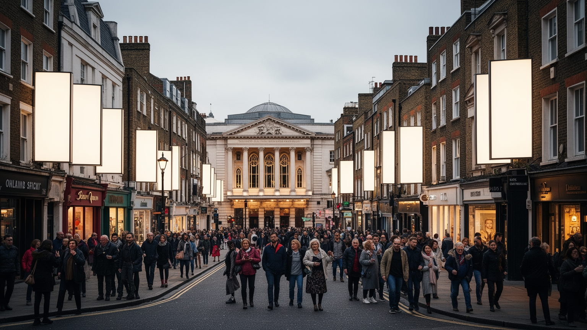
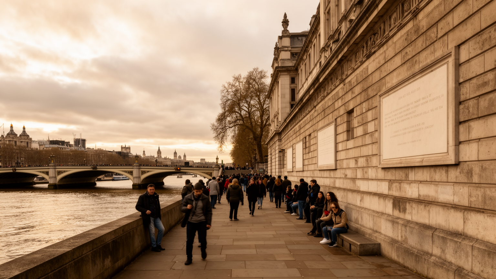
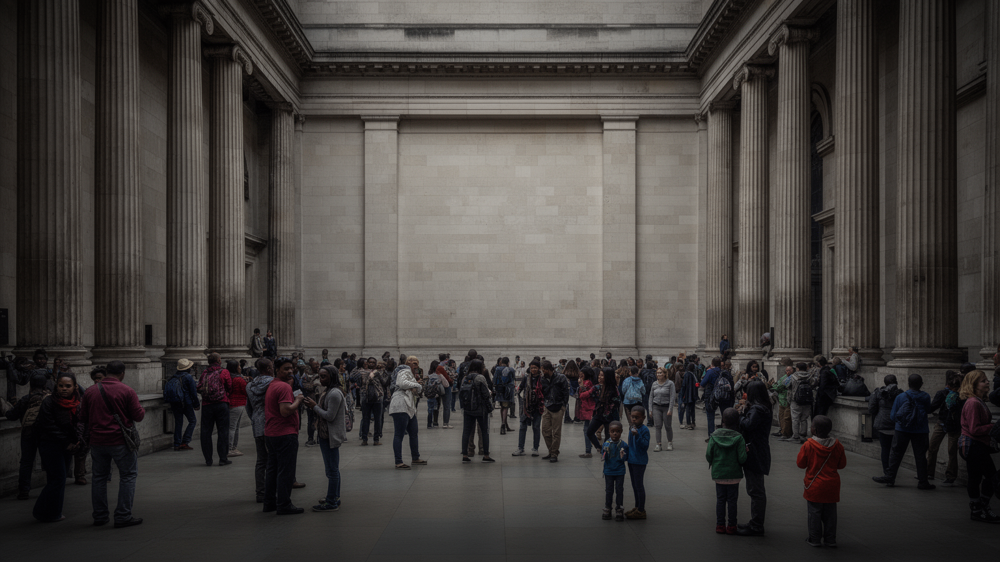
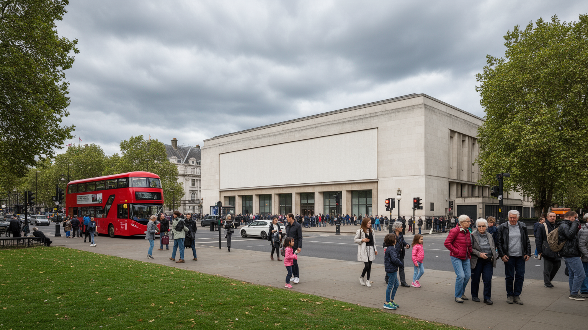
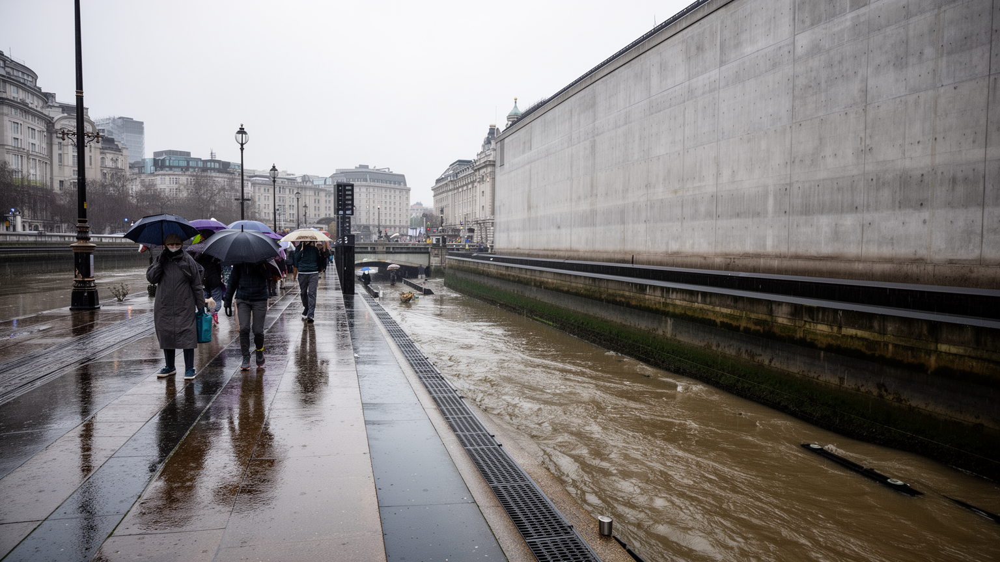
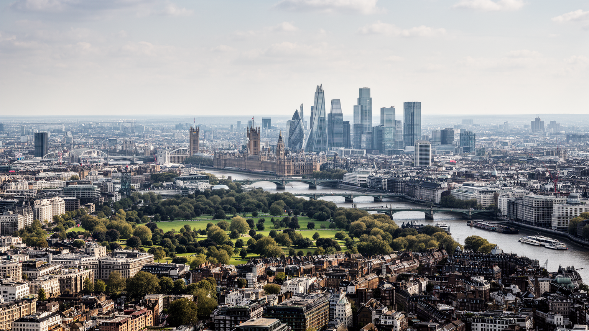

地政学
王室、議会、官庁、金融市場、大使館が近距離に集まります。ロンドンは英国政治の中枢であり、旧帝国圏、欧州、大西洋を結ぶ記憶と外交の結節点です。抗議、警備、儀礼、報道も街路に現れ、首都の緊張を可視化します。

🇬🇧 イギリス / ヨーロッパ / World City Atlas
王権、議会、シティ金融、旧帝国圏の移民文化がテムズ川沿いに重なる世界都市。金融の中心であると同時に、階級、住宅、宗教、文化産業、植民地の記憶を読む都市です。
都市の骨格
ロンドンはテムズ川を軸に、西の王室と議会、東のシティ金融、さらに港湾から再開発地へ変わったドックランズを結びます。地下鉄と郊外鉄道は、この多中心都市を毎日縫い合わせます。
王室、議会、官庁、金融市場、大使館が近距離に集まります。ロンドンは英国政治の中枢であり、旧帝国圏、欧州、大西洋を結ぶ記憶と外交の結節点です。抗議、警備、儀礼、報道も街路に現れ、首都の緊張を可視化します。
シティとカナリー・ワーフの金融、法律、保険、広告、大学、観光が厚い一方、清掃、介護、交通、飲食、配送、建設が都市の日常を支えます。高収入職と現場労働が隣り合い、格差も見えます。生活費も重い条件です。
英国国教会の儀礼に加え、イスラム教、ヒンドゥー教、シク教、ユダヤ教、黒人教会が地区ごとの生活を支えます。博物館、劇場、市場、移民街が帝国の記憶を更新し、都市の層として残ります。今も生活に続きます。
宮殿、議事堂、博物館、劇場、市場を巡れる一方、住民には家賃、通勤費、学校区、公共サービス、移民政策が日々の課題です。観光の成功は生活を守れるかで決まり、住民の負担も残ります。今もなお重い課題です。

ロンドンの骨格はテムズ川と橋、地下鉄、郊外鉄道でできています。川は観光の背景である前に、港、倉庫、王宮、議会、裁判所、劇場、金融街を結んできた都市の軸です。中心は一つではなく、ウェストミンスター、シティ、ウェストエンド、サウスバンク、ドックランズが役割を分けます。港湾は下流へ移り、古い倉庫地は高層住宅と金融地区へ変わりました。地下鉄は世界都市の象徴ですが、実際の生活圏はバス、郊外鉄道、空港連絡、徒歩に支えられます。家賃が上がるほど人は中心から遠く住み、通勤時間と運賃が生活を左右します。ロンドンを読むには、橋の上の眺望だけでなく、下流の物流、駅の混雑、郊外から中心へ向かう朝の列車まで見る必要があります。さらに、南北の移動や東西の所得差は、鉄道の接続、橋の位置、川沿い再開発の進み方に表れます。便利な中心を支えるのは、中心から押し出された人の長い移動でもあります。交通は単なるインフラではなく、誰が都市の近くに住み、誰が遠くから働きに来るかを決める社会制度です。加えて、空港や高速鉄道は金融と観光を世界へ開きますが、騒音、運賃、混雑、郊外開発の負担も生みます。移動の便利さは、都市の競争力であると同時に、日々の不平等を測る尺度でもあります。川と線路を重ねて見ると、都市の力学がより立体的に見えます。

ロンドン中心部では、王室、議会、首相官邸、官庁、大使館、裁判所、報道機関が徒歩圏で重なります。政治は建物の中だけでなく、国家儀礼、抗議デモ、追悼式、外交行事、警備の柵、交通規制として街路に現れます。ウェストミンスターの広場や橋は、観光客が写真を撮る場所であると同時に、市民が政府へ声を届ける場所です。開かれた民主主義の舞台でありながら、テロ対策、群衆管理、王室行事の警備も必要になります。この緊張がロンドンの首都性です。王権の象徴と議会政治が近くにあることで、都市は歴史の連続を演出しますが、同時に王室への賛否、移民政策、気候運動、戦争への抗議も集めます。ロンドンの政治を読むとは、美しい宮殿や議事堂だけでなく、その周囲で誰が守られ、誰が抗議し、どの道が封鎖されるかを見ることです。王室儀礼は観光資源にもなりますが、税負担、植民地の記憶、階級意識をめぐる議論も生みます。国家の象徴が日常の通勤路や広場に置かれているため、政治は遠い制度ではなく、街の使い方そのものとして住民に経験されます。さらに、ロンドンは地方分権、英国連合、欧州との距離をめぐる議論も集めます。首都の決定が国内各地へ影響するほど、ロンドン集中への反発も強まり、政治都市としての責任が重くなります。議会前の広場は、その責任を市民が見張る場所でもあります。

ロンドンの経済はシティの金融だけではありません。法律、会計、保険、広告、大学、出版、放送、劇場、観光が金融市場と結びつき、世界中の企業、人材、ニュース、資本を集めます。一方で、都市を毎日動かす労働は見えにくいままです。地下鉄とバス、病院、介護、ホテル、レストラン、清掃、警備、建設、配送は、多国籍の労働者に支えられています。高収入の専門職が中心部へ集まるほど、低賃金の現場労働者は中心に住みにくくなり、長い通勤と住宅不安を抱えます。英語力、資格、在留資格、出身階層、人種、教育機関へのアクセスは、働ける場所を細かく分けます。夜間清掃や厨房の仕事、早朝の配送、介護のシフトは、金融都市の裏側にある時間割です。ロンドンの豊かさを考えるなら、取引額だけでなく、都市を支える人が休み、住み、移動できる条件を見る必要があります。金融の集中は税収と雇用を生みますが、家賃、交通費、保育費を押し上げ、公共サービスの現場を疲弊させることもあります。世界都市の競争力は、専門職だけでなく、都市を止めない労働者の生活条件で測られるべきです。大学とクリエイティブ産業は新しい人材を呼びますが、若い制作者や学生ほど住居費に苦しみます。才能を集める都市であり続けるには、働き始めの人が残れる家賃と職場環境も必要です。労働市場の強さは、生活の持続可能性と切り離せません。

ロンドンの住宅問題は、単に家賃が高いという話ではありません。中心部の不動産は国際投資の対象になり、古い公共住宅や低所得者向け住宅は再開発の圧力を受けます。市場価値が上がるほど、地域に長く住む人の生活は不安定になり、学校、仕事、介護、友人関係まで切れやすくなります。郊外は逃げ場である一方、交通費、通勤時間、保育、医療へのアクセスが生活を圧迫します。保存されたテラスハウス、高層の投資用住宅、古い公営団地、学生寮、移民家族の密集住宅が隣り合い、同じ地区に違う暮らしが重なります。誰が中心に住めるのか、誰が遠くから通うのか、誰の子どもが良い学校へ通えるのかは、階級、人種、移民、労働の問題として現れます。住宅は私的な買い物ではなく、都市で共同生活を続けるための社会基盤です。再開発で建物が新しくなっても、地域の店、学校、礼拝所、友人関係が失われれば、生活の厚みは薄くなります。ロンドンの住宅を見ることは、富の流入が誰の居場所を作り、誰の居場所を消すのかを見ることです。公営住宅の更新、家賃補助、空き家対策、短期賃貸の管理は、都市の公平性を左右します。住宅を市場だけに任せるほど、働く人の生活は中心から離れ、地域の記憶も失われます。住まいは階級差が最も見えやすい都市の表面です。家は社会参加の出発点でもあります。

ロンドンの文化は、宮殿や大英博物館だけで説明できません。劇場街、大学、古書店、音楽、フットボール、カリブ系の祭り、南アジア系の商店街、中東系の食、アフリカ系教会が都市の厚みを作ります。セント・ポール大聖堂やウェストミンスター寺院は国家儀礼の舞台ですが、東部や郊外にはモスク、ヒンドゥー寺院、シク教寺院、黒人教会、ユダヤ教会堂があり、祈りだけでなく言語、食、教育、福祉、移民の相談を支えます。博物館や記念碑は世界的な文化資本である一方、帝国の収集と支配の歴史も抱えています。収蔵品の由来や返還をめぐる議論は、旧帝国の中心であった事実を現在へ引き戻します。多文化性とは、ただ多様で華やかな街という意味ではありません。誰の歴史を展示し、どの宗教や言語を正当に扱うかという現在の政治でもあります。文化施設が無料で開かれていることは大きな公共性ですが、その展示や物語が誰の声で作られているかも問われます。ロンドンの文化を読むには、劇場の明かり、礼拝の時間、市場の匂い、博物館の沈黙を一つの地図に置く必要があります。文化産業は観客の楽しみであると同時に、移民の店、学生の仕事、夜の交通、警備、清掃にも支えられます。創作の自由を守るには、表現の場だけでなく、作り手が住み続けられる都市条件も欠かせません。文化は施設ではなく、生活の場所と結びついて残ります。

ロンドン観光の強さは、王宮、議事堂、大聖堂、博物館、劇場、橋、市場を短い距離で巡れる点にあります。観光客は歴史の連続性を楽しみますが、その背景には帝国が集めた物、戦争の記憶、産業の変化、移民地区の商業化があります。名所は美しいだけでなく、誰の記憶を展示するのかを問う場所です。テムズ川沿いの散策路は写真を撮る舞台であると同時に、洪水対策、再開発、公共空間の管理、観光経済の収益化が見える場所でもあります。ミュージカル、美術館、マーケット、フットボール観戦は都市の魅力を広げますが、短期滞在者の消費が住宅価格や店舗構成を変えることもあります。観光を考えるときは、王室行事や名所の華やかさだけでなく、清掃、警備、交通、宿泊、飲食、文化施設で働く人も見る必要があります。ロンドンは過去を保存する都市であり、過去を商品化する都市でもあります。観光が成功するほど、住民の日用品店や市場が観光客向けに変わり、地域の暮らしが押し出されることもあります。名所巡りは、都市が何を見せ、何を見えにくくしているのかを読む入口です。観光客の歩く道と住民の生活路が重なるため、混雑、騒音、短期滞在、価格上昇も起きます。観光の価値は、訪問者の満足だけでなく、住民が街を使い続けられるかで測る必要があります。観光は記憶を守る力にも、生活を変えすぎる力にもなります。

ロンドンは旧帝国の中心として、世界各地から人、資本、商品、標本、芸術品、行政知識を集めてきました。その蓄積は博物館、大学、金融制度、法律事務所、港湾、記念碑に残ります。街を歩くと、植民地支配の利益で築かれた建物や収集品が公共文化として開かれている一方、その由来をめぐる痛みや返還要求も見えてきます。帝国の記憶は過去の出来事ではなく、現在の移民、差別、教育、外交、文化政策に関わります。旧植民地から来た人々は、労働者、学生、医師、店主、芸術家として都市を作り直してきました。ブリクストン、サウソール、ブリック・レーン、ノッティングヒルのような地区では、食、音楽、宗教、抗議運動が都市の記憶を更新します。ロンドンを読むには、世界文化を集めた都市という誇りと、収奪や人種差別の歴史を同時に置く必要があります。帝国をめぐる議論は、像を残すか撤去するかだけでは終わりません。学校で何を教えるか、博物館で誰が説明するか、移民の子どもが自分の歴史をどう見つけるかにも関わります。その緊張を隠さないことが、都市の公共性を測る基準になります。金融、大学、法律、言語の影響力も帝国の後に残った制度です。過去を美化せず、現在の不平等と結びつけて読むことで、ロンドンは世界史の展示室ではなく、記憶をめぐる交渉の場として見えてきます。

ロンドンの日常は、曇り空、小雨、地下鉄の遅延、赤いバス、昼休みの公園、仕事帰りのパブ、週末のマーケットにあります。気候は厳寒ではありませんが、湿った空気と暗い冬は生活のリズムに影響し、夏の熱波は古い住宅や地下鉄の弱さを見せます。学校、病院、図書館、公園、地域センターは派手ではありませんが、生活の質を決める重要な場所です。移民家庭の子ども、高齢者、学生、単身者、低賃金労働者、専門職が同じ都市を使うには、交通費、公共サービス、治安、言語支援、住宅の安定が必要です。フットボールも公共文化の一部で、地区の帰属意識を作ります。食の風景は英国料理だけでなく、南アジア、カリブ、中東、アフリカ、東欧、東アジアの家庭料理や宗教上の食習慣に支えられます。選択肢の多さはロンドンの魅力ですが、その選択肢へ誰が届けるかを問わなければ、豊かさは一部の人だけのものになります。公共サービスが弱ると、多様性は美しい言葉ではなく、言語、医療、教育、介護をめぐる負担として現れます。日常のロンドンは、観光地の外で誰が支援を受け、誰が孤立するかで評価されます。地域図書館、診療所、学校の相談窓口、スポーツ施設は、移民や低所得世帯にとって都市への入口です。こうした小さな公共空間が残るほど、多民族都市は単なる消費地ではなく生活の場所になります。

ロンドンの気候は穏やかに見えますが、都市には水と熱のリスクがあります。テムズ川は都市の背骨である一方、高潮、洪水、護岸、排水、橋の管理を常に必要とします。下流の防潮施設や川沿いの公共空間は、観光の景観であると同時に気候適応の装置です。古い住宅は断熱や換気が弱く、夏の熱波では高齢者、低所得者、地下鉄利用者、屋外労働者が影響を受けます。雨が多い都市では、道路の排水、地下空間、古い下水道、駅の混雑が生活の質に直結します。気候変動はロンドンを劇的に変えるのではなく、すでにある住宅格差、公共交通の負担、医療へのアクセスの差を強めます。川沿いの再開発地は魅力的ですが、水害への備えと避難のしやすさも同時に問われます。ロンドンの環境を読むことは、公園や川辺の美しさを見るだけでなく、誰が涼める場所を持ち、誰が浸水しやすい住宅に住むのかを見ることです。気候対策は堤防や排水だけでなく、断熱、日陰、医療、避難情報、地域の見守りと結びつきます。水と熱への備えは、都市の豊かさを住民全体へ分配できるかを試します。緑地や街路樹は景観ではなく、暑さを和らげる社会インフラです。防災情報が英語だけに偏れば、移民や旅行者は危険を理解しにくくなります。気候への備えも多言語で公平である必要があります。川の都市であることは、常に水と共存する責任を持つことでもあります。

ロンドンは、政治権力、金融市場、王室儀礼、植民地の記憶、多民族の生活、文化産業が同じ地図上で読める都市です。ウェストミンスターの国家機能、シティの金融、ウェストエンドの劇場、東部の移民地区、郊外の住宅地、テムズ川沿いの再開発は、それぞれ別の顔を持ちながら一つの都市圏として結びついています。世界中の人を引き寄せる自由と機会がある一方、住宅費、階級差、移民政策、公共サービス不足、過去の帝国支配をめぐる議論も抱えます。ロンドンの強さは、富と文化が集中することだけではありません。矛盾を隠し切れないほど多様な人と記憶が近くにあることです。王宮から市場、金融街から礼拝所、博物館から公営住宅までが短い移動で連続するため、豊かさと排除が隣り合う現実が見えます。ロンドンを読むことは、世界都市の成功が誰の住まい、労働、歴史認識によって支えられているのかを読むことです。都市の魅力は、過去の威信と現在の多様性を同時に見せる点にあります。しかし、その魅力を保つには、中心に集まる資本だけでなく、生活を守る住宅、公共サービス、移民支援、気候適応を同じ重要度で扱う必要があります。ロンドンは完成した記念碑ではなく、王室、金融、移民、若者、労働者、観光客が日々交渉する場所です。その交渉を追うことで、世界都市の華やかさと脆さが同時に見えてきます。